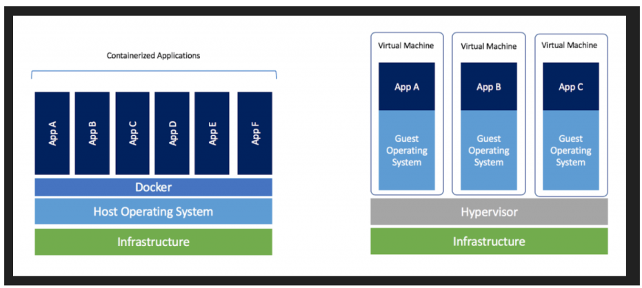

Docker
Docker’s original 3 innovations
Docker was not the inventor of containers, but it made them easier to use with the three steps to creating and running them.
Image: It aids you in packaging an application (with all its dependencies).
Registries: It helps to distribute that app around to all the places you need to run it.
Containers: It runs that app in a highly reproducible way.
Docker calls this the Build, Ship and Run life cycle.
These are the basics that all other container technology is built on. e.g., - Kubernetes - Swarm - Helm
Docker Images
The Docker Image: Universal app packaging
It’s called a “Docker image”, the standards name “OCI Image”, or just “image” for short.
Docker uses a list of instructions, called a Docker file
It is similar to a shell script, and it layers those instructions on top of each other until it has everything you need to run the application, including all its system dependencies.
Including the dependencies is a key differentiator between Docker and many previous packaging systems.
It helps prevent the (only) “works on my machine” problem of two different environments having slightly different sets of dependencies.
If it was a Python app you wanted to build, then the image would contain the app itself, and all the Python dependencies the app needs.
The key distinction is it also includes the exact Python version and system libraries to correctly run Python.
Everything except the OS kernel and hardware drivers is included.
Even metadata on how to start the app, default environment variables, and what ports it listens on are included.
Docker Registry
The Registry: Easy app distribution
Called a “Docker registry”, or just “registry” for short.
This innovation was the key to connecting our building of images on one machine to running our containers on another.
Now that we have built an imarun ran it on our local machine, how do we get it on all the other machines?
How can I be sure that the rest of my team, my CI testing, and all my servers run the exact same image?
The registry is an HTTP-based package manager that works like apt, yum, npm, and other package managers.
You can push an image to it, and then pull an image somewhere else.
The registry protocol is efficient.
It only pushes and pulls the changed parts (layers), and stores the image in the machine’s local cache for the fast running of new containers.
The images and the registry as the universal package manager for modern computing
we may want to build, download, and run any app on any system.
e.g., building and running on
Linux
MacOS
Windows
in the cloud
in your datacenter
on a mainframe
a tiny Raspberry Pi.
Docker Container
The Docker Container: Easy app running
Called a “Docker container”, the standards name “OCI Container”, or just “container” for short. It’s not called a “docker”, or “dockers”.
Docker will launch your container image into a new running container and use the command you specified in the Dockerfile to start it.
It uses two Linux Kernel features, to isolate your app so it can’t see the rest of the host by default. namespaces
cgroups (control groups),
To the app, the only files it sees are the ones in the container image.
It sees no other processes outside the container and even gets its own virtual ethernet adapter and private IP.
It’s not virtualization. Its application isolation, similar to chroot, FreeBSD jails, or Solaris zones, which all came before Docker.
You can start many of these containers from the same container image, on the same system.
They’ll all be isolated from each other. File changes in one container don’t affect the files in another.
Requirements of Docker
Docker needed to exist because the old ways were full of friction and complexity when met with the modern area of software development and the speed at which we needed to operate.
The Problem of Isolation The Problem of Environments The Problem of Speed
The Problem of Isolation
Need of different software versions
Problem of Environment

Problem of speed

By combining the ideas of the image, registry, and container, Docker (and the tooling it inspired) improves the time-to-complete in nearly every part of the software lifecycle:
Develop faster
Build faster
Test faster
Deploy faster
Update faster
Recover faster
DevOps
DevOps is a set of practices, guidelines and culture designed to reduce the gap between software development and software operations.
If Both teams work together, productivity will increase
DevOps established five goals.
Reduce organizational silos
Accept failure as normal
Implement gradual changes
Leverage tooling and automation
Measure everything
Docker is software development platform - Here you packaged app in images - Container use image to start application - Containers run on any operating system - It works exactly same independent of OS, machine, Environment - Lightweight compared to VM - Easier to maintain & deploy - Docker works with any language, runtime, OS
Docker VS Virtual Machine
